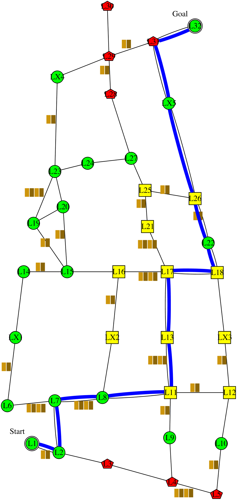
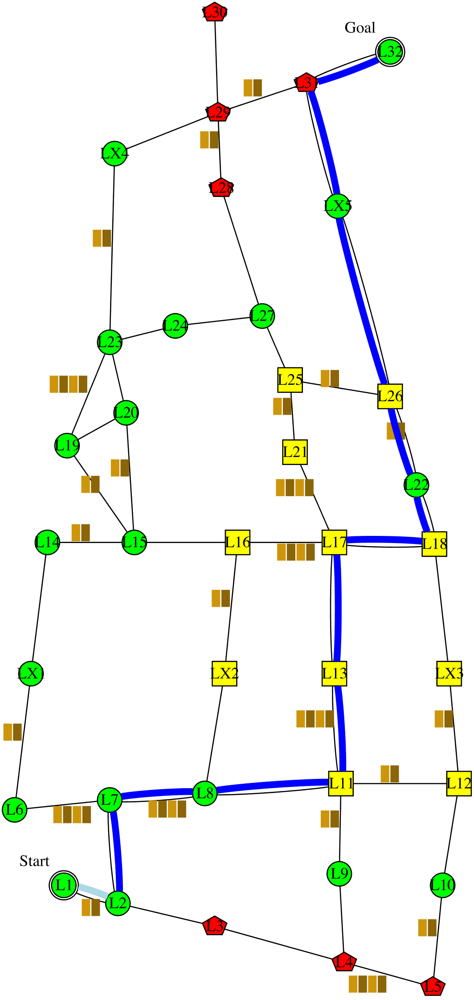

I'm planning to follow this policy . It is expected to have 1 collision; take 127 minutes; and have intrusiveness-penalty of 8: be non-intrusive 6 steps, somewhat-intrusive 5 steps, and very-intrusive 1 step. It has the lowest expected time, and intrusiveness. Alternatively, following this policy  would reduce the collision to 0.8 collision. However, I didn't choose that policy because it would increase the time to 136 minutes. The decrease in collision is not worth the increase in time.